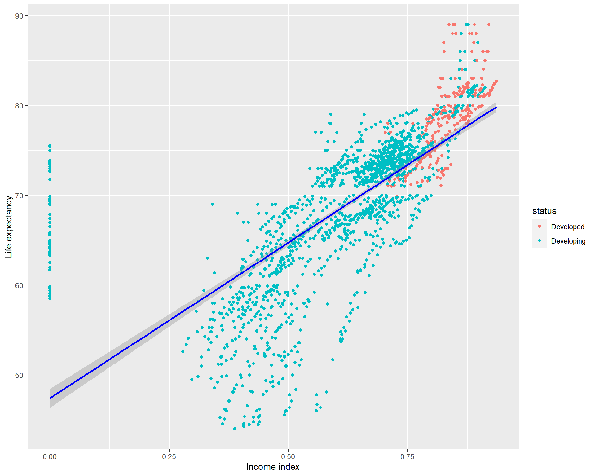
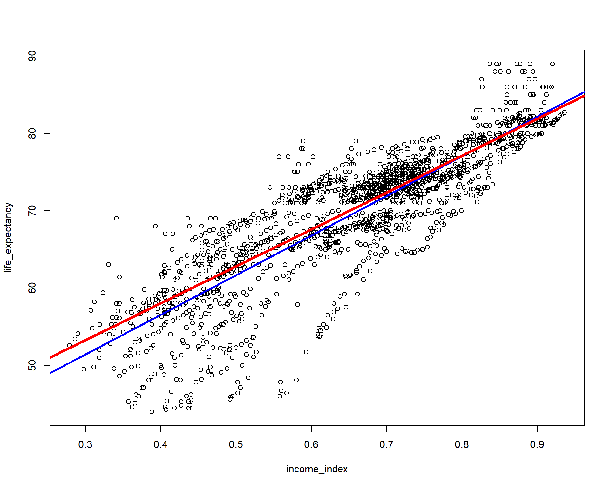

Motivation
Around a year ago, a subscriber on my YouTube channel requested that I create a video on “Quantile regression”. Although I had no prior experience with this regression technique, I accepted the assignment and began researching the topic. After gaining a basic understanding of the technique, I created a video which was well-received by my audience, and has since become one of my most viewed videos. You can watch the video below. Several viewers have also requested that I make the code available, and I apologize for the delay in doing so due to time constraints. Better than never, I will share you the code today. Thanks for your patience.
What is qauntile regression?
Quantile regression is a statistical technique used to model the relationship between a response variable and one or more predictor variables. Unlike traditional regression models that estimate the mean of the response variable given the predictor variables, quantile regression estimates the conditional quantiles of the response variable.
An equal probability portion of a distribution is represented by a quantile. When the median is the 50th percentile, for instance, 50% of the distribution’s values fall below the median and 50% fall above it. We can estimate any conditional quantile of the response variable in quantile regression, not only the median.
Quantile regression’s primary benefit is that it enables us to model the relationship between the predictor variables across different parts of the distribution of the response variable. This can be useful when the relationship between the predictor variables and the response variable is not constant across the distribution, for example, when the relationship is stronger in the tails of the distribution.
Without spending more time, I will proceed directly to the codes. I need few libraries and I will use the life_expectancy data set. I will use quantreg package to do the models(life expactancy as a function of income) and plotly to visualize the coefficients in 3D.
Read Datasets
Country Year Status Life.expectancy Adult.Mortality
1 Afghanistan 2015 Developing 65.0 263
2 Afghanistan 2014 Developing 59.9 271
3 Afghanistan 2013 Developing 59.9 268
4 Afghanistan 2012 Developing 59.5 272
5 Afghanistan 2011 Developing 59.2 275
6 Afghanistan 2010 Developing 58.8 279
infant.deaths Alcohol percentage.expenditure Hepatitis.B Measles
1 62 0.01 71.279624 65 1154
2 64 0.01 73.523582 62 492
3 66 0.01 73.219243 64 430
4 69 0.01 78.184215 67 2787
5 71 0.01 7.097109 68 3013
6 74 0.01 79.679367 66 1989
BMI under.five.deaths Polio Total.expenditure Diphtheria HIV.AIDS
1 19.1 83 6 8.16 65 0.1
2 18.6 86 58 8.18 62 0.1
3 18.1 89 62 8.13 64 0.1
4 17.6 93 67 8.52 67 0.1
5 17.2 97 68 7.87 68 0.1
6 16.7 102 66 9.20 66 0.1
GDP Population thinness..1.19.years thinness.5.9.years
1 584.25921 33736494 17.2 17.3
2 612.69651 327582 17.5 17.5
3 631.74498 31731688 17.7 17.7
4 669.95900 3696958 17.9 18.0
5 63.53723 2978599 18.2 18.2
6 553.32894 2883167 18.4 18.4
Income.composition.of.resources Schooling
1 0.479 10.1
2 0.476 10.0
3 0.470 9.9
4 0.463 9.8
5 0.454 9.5
6 0.448 9.2I will now do some data cleaning. The variable names are a bit tedious and to avoid using the back ticks. I will simply clean up the column names using the janitor packages very useful clean_names() function
life_expe_data <- clean_names(life_exp)
names(life_expe_data) [1] "country"
[2] "year"
[3] "status"
[4] "life_expectancy"
[5] "adult_mortality"
[6] "infant_deaths"
[7] "alcohol"
[8] "percentage_expenditure"
[9] "hepatitis_b"
[10] "measles"
[11] "bmi"
[12] "under_five_deaths"
[13] "polio"
[14] "total_expenditure"
[15] "diphtheria"
[16] "hiv_aids"
[17] "gdp"
[18] "population"
[19] "thinness_1_19_years"
[20] "thinness_5_9_years"
[21] "income_composition_of_resources"
[22] "schooling" Now the variable names are clean, we can do the rest of the coding as follows.I now remove the missing values. You can do better for your data by using imputation techniques to deal with missing values. But that is not my goal here today. Perhaps, I may do a blog or a YouTube video in the future. I just need you to demand for it or encourage me to do it.
life_exp_narm <- life_expe_data[complete.cases(life_expe_data),]
dim(life_exp_narm) [1] 1649 22We have about 22 variables and 1649 observations. Not bad for modelling! Since, income_composition_of_resources is a really long and boring variable name, I am changing it.
summary(life_exp_narm$income_index) Min. 1st Qu. Median Mean 3rd Qu. Max.
0.0000 0.5090 0.6730 0.6316 0.7510 0.9360 sd(life_exp_narm$income_index)[1] 0.1830887summary(life_exp_narm$life_expectancy) Min. 1st Qu. Median Mean 3rd Qu. Max.
44.0 64.4 71.7 69.3 75.0 89.0 sd(life_exp_narm$life_expectancy)[1] 8.796834You can see that our main predictor variable has a mean 0.65 and SD of 0.149. It maybe a good idea to take a look at it by visualizing it. And the mean life expectancy was 69.4(SD=8.88)
ggplot(life_exp_narm, aes(x=income_index,
y=life_expectancy, col=status)) + geom_point() +
geom_smooth(method = "lm", col="blue") +
xlab("Income index") + ylab("Life expectancy")
Qauntile regression
Before doing the quantile regression. It might be a good idea to take a look at the visualization by setting different tau values in abline of the base r plot showing the relationship between life_expectancy and income_index. The
OLS regression is do the regression from the mean while the quantil regression n quantile regression, we can estimate any conditional quantile of the response variable, not just the mean but could be the medeian (50%), 90%, 75% or anywhere until 99%.If this is not clear, I highly recommended watching the video I dropped earlier.
Let’s now vizualize the mean and the median ablines
plot(life_expectancy ~ income_index, data = life_exp_narm)
abline(lm(life_expectancy ~ income_index, data = life_exp_narm), col="blue", lwd = 3)
abline(rq(life_expectancy ~ income_index, tau=0.5, data = life_exp_narm), col="red", lwd = 4) # Notcie the tau=0.5, 
You can see the plot blue line is the OLS regression line but the red line is if we model the regression using the median. If you have to run only two models and choose the model that best fits the data, you have to choose by your loss function(eg. the model with mean squared error or mean absolute error, etc will be the best fit). NB: choosing the right model is not my goal here.
Now let’s add 10th and 90th percentiles from the above vizualization and evaluate which line looks better fit for the relationship between the two variables.
plot(life_expectancy ~ income_index, data = life_exp_narm)
abline(lm(life_expectancy ~ income_index, data = life_exp_narm), col="blue", lwd = 3)
abline(rq(life_expectancy ~ income_index, tau=0.5, data = life_exp_narm), col="red", lwd = 4)
abline(rq(life_expectancy ~ income_index, tau=0.1, data = life_exp_narm), col="black", lwd = 5)
abline(rq(life_expectancy ~ income_index, tau=0.90, data = life_exp_narm), col="turquoise4", lwd = 6)
Let’s now run four different models at the mean(OLS), and quantile regressions at the median, 10th percentile and 95th percentiles. Notice the tau values. I also added one more variable.
ols <- rq(life_expectancy~income_index+schooling, data = life_exp_narm) #Similar to lm()
quant_reg_med <- rq(life_expectancy~income_index+schooling,tau = 0.5, data = life_exp_narm)
quant_reg_first <- rq(life_expectancy~income_index+schooling,tau = 0.1, data = life_exp_narm)
quant_reg_last <- rq(life_expectancy~income_index+schooling,tau = 0.95, data = life_exp_narm)summary(ols)
Call: rq(formula = life_expectancy ~ income_index + schooling, data = life_exp_narm)
tau: [1] 0.5
Coefficients:
Value Std. Error t value Pr(>|t|)
(Intercept) 40.57450 0.61311 66.17807 0.00000
income_index 42.98405 2.55537 16.82108 0.00000
schooling 0.13103 0.12618 1.03848 0.29920summary(quant_reg_med)
Call: rq(formula = life_expectancy ~ income_index + schooling, tau = 0.5,
data = life_exp_narm)
tau: [1] 0.5
Coefficients:
Value Std. Error t value Pr(>|t|)
(Intercept) 40.57450 0.61311 66.17807 0.00000
income_index 42.98405 2.55537 16.82108 0.00000
schooling 0.13103 0.12618 1.03848 0.29920summary(quant_reg_first)
Call: rq(formula = life_expectancy ~ income_index + schooling, tau = 0.1,
data = life_exp_narm)
tau: [1] 0.1
Coefficients:
Value Std. Error t value Pr(>|t|)
(Intercept) 26.95679 1.75588 15.35230 0.00000
income_index 73.77874 4.89153 15.08297 0.00000
schooling -0.88598 0.23329 -3.79781 0.00015summary(quant_reg_last)
Call: rq(formula = life_expectancy ~ income_index + schooling, tau = 0.95,
data = life_exp_narm)
tau: [1] 0.95
Coefficients:
Value Std. Error t value Pr(>|t|)
(Intercept) 51.70490 0.67281 76.84915 0.00000
income_index 7.49947 2.12188 3.53435 0.00042
schooling 1.67244 0.11802 14.17047 0.00000You can see the OLS and quanitile regression based on the median are identical.But the others are different.
For effectively modeling numerous quantreg models, you may do somthing like the following.
taus<-seq(from = .05, to = .95, by = 0.05) #Taus ranging from 0.05 to 0.95 with a step value of 0.05
quant_all <- rq(life_expectancy~income_index,tau = taus,
data = life_exp_narm)names(quant_all) #To access the cntents of our model [1] "coefficients" "x" "y" "residuals"
[5] "dual" "fitted.values" "formula" "terms"
[9] "xlevels" "call" "tau" "rho"
[13] "method" "model" quant_all$tau #To see the taus [1] 0.05 0.10 0.15 0.20 0.25 0.30 0.35 0.40 0.45 0.50 0.55 0.60 0.65
[14] 0.70 0.75 0.80 0.85 0.90 0.95With that we have got several models. But how we access a specific model for example when tau=0.8 or tau=0.1?
[[1]]
Call: rq(formula = life_expectancy ~ income_index, tau = taus, data = life_exp_narm)
tau: [1] 0.8
Coefficients:
Value Std. Error t value Pr(>|t|)
(Intercept) 53.26867 0.76988 69.19087 0.00000
income_index 31.33047 0.89933 34.83771 0.00000[[1]]
Call: rq(formula = life_expectancy ~ income_index, tau = taus, data = life_exp_narm)
tau: [1] 0.1
Coefficients:
Value Std. Error t value Pr(>|t|)
(Intercept) 23.54277 1.73947 13.53445 0.00000
income_index 61.73633 2.30556 26.77719 0.00000How about if we want to access the coefficients?
QR.coef <- coef(quant_all)Or in a more complicated way like the following
lprq <- function(x, y, h, m=19 , tau=.5)
{
xx <- seq(min(x),max(x),length=m)
fv <- xx
dv <- xx
for(i in 1:length(xx)) {
z <- x - xx[i]
wx <- dnorm(z/h)
r <- rq(y~z, weights=wx, tau=tau, ci=FALSE)
fv[i] <- r$coef[1.]
dv[i] <- r$coef[2.]
}
data.frame(dv = dv)
}
#Create a matrix to save the QQR estimates
taus<-seq(from = .05, to = .95, by = 0.05)
QQR.coef <- as.data.frame(matrix(0, ncol = 19, nrow = 19))
# Run QQR in a loop and save estimates in matrix "QQR.coef"
#Note: 0.05 in below loop is the bandwidth that can be adjusted
o <-life_exp_narm$life_expectancy
p <-life_exp_narm$income_index
for (i in 1:19){
x<-lprq(o, p,0.05,tau=taus[i])
QQR.coef[,i]<-x
} Let’s now save all coefficients in a matrix
beta <- as.matrix(QQR.coef)Vizualize
p <- plot_ly( z = ~beta, x = ~taus, y = ~taus, opacity = 0.6) %>%
add_markers()
p %>% add_surface(z = ~beta, x = ~taus, y = ~taus, showscale = FALSE) %>%
layout(showlegend = FALSE)That is all for today. Again I highly recommend watching the video and reading quantreg package functions. I hope, you like it. I hope I will see you in the next post.
Contact
Please mention @RPy_DataScience if you tweet this post.